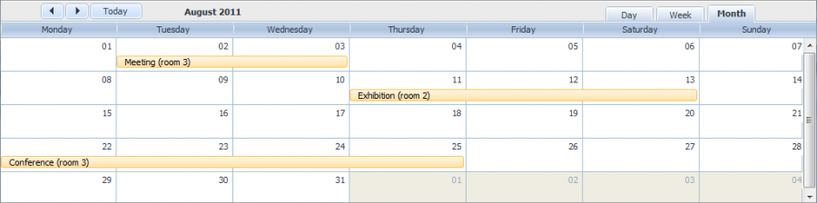

How to start
In this tutorial we want to consider creation of a standard scheduler that loads data from a database and save it back. The final code of the tutorial can be used as the start point while creating applications using dhtmlxScheduler.

If you already known with creation of dhtmlxScheduler integrated with server-side you can move
straight to the source code, to start use it as the foundation of your app.
The tutorial divided into 8 logical parts (steps):
Step 1:
Step 2:
Step 3:
Step 4:
Step 5:
Step 6:
Step 7:
Step 8:
Step 1. A new HTML file and required code files
Let’s start our application with creating a new HTML file and including to it the required scheduler code files.
Required code files are:
- dhtmlxscheduler.js;
- dhtmlxscheduler.css.
<!DOCTYPE html PUBLIC "-//W3C//DTD XHTML 1.0 Transitional//EN" "http://www.w3.org/TR/xhtml1/DTD/xhtml1-transitional.dtd"> <html xmlns="http://www.w3.org/1999/xhtml"> <head> <title>How to start</title> <script src="../scheduler/dhtmlxscheduler.js" type="text/javascript" charset="utf-8"></script> <link rel="stylesheet" href="../scheduler/dhtmlxscheduler.css" type="text/css" charset="utf-8"> </head> <body> // your code will be here </body> </html>
Step 2. Related DIV elements
Before initialization of the scheduler, we should define the related DIV containers for its elements.
The standard set of 'divs' (needed for the scheduler) looks like:
<div id="scheduler_here" class="dhx_cal_container" style='width:100%; height:100%;'> <div class="dhx_cal_navline"> <div class="dhx_cal_prev_button"> </div> <div class="dhx_cal_next_button"> </div> <div class="dhx_cal_today_button"></div> <div class="dhx_cal_date"></div> <div class="dhx_cal_tab" name="day_tab" style="right:204px;"></div> <div class="dhx_cal_tab" name="week_tab" style="right:140px;"></div> <div class="dhx_cal_tab" name="month_tab" style="right:76px;"></div> </div> <div class="dhx_cal_header"> </div> <div class="dhx_cal_data"> </div> </div>
Step 3. Style
To work correctly in the fullscreen mode in different browsers you should define the following style for the scheduler:
<style type="text/css" media="screen"> html, body{ margin:0px; padding:0px; height:100%; overflow:hidden; } </style>
If you don't use the fullscreen mode, you haven't to specify such the style. You can set any desired style directly in the main div:
<div id="scheduler_here" class="dhx_cal_container" style='width:200px; height:300px; padding:10px;'> ...
Step 4. Initialization
After we have finished preparatory work we can move to initialization. Beware, the scheduler is a static object and can be instantiate on the page once. To refer to the scheduler you must use dhtmlxScheduler or simply scheduler.
scheduler.init('scheduler_here',null,"week");
Step 5. Loading data
If you run the app now, you already can see scheduler on the page. But it won’t contain any data.
To load data we must use method load().
In case of static loading we would specify there the appropriate data file (e.g. 'events.xml'), but as we will load data from database we should specify there a file realizing server-side ‘communication’. You may write full server-side by yourself, but we recommend to use dhtmlxConnector as the easiest way.
So, for our task we'll call the method as shown below:
scheduler.load("data/connector.php");// the url of the file that will process update/insert/delete operations on the server-side.
Step 6. Database structure
To be correctly processed, your database table must contain at least 3 fields:
- start_date - (DateTime) the date when a task is scheduled to begin. The default format - ”%m/%d/%Y %H:%i”.
- end_date - (DateTime) the date when a task is scheduled to be completed. The default format - ”%m/%d/%Y %H:%i”.
- text - (string) the text of a task.
Besides stated, you can create any number of extra fields which then can be passed to the client-side and mapped to the lightbox.
Beware, the format of the DataTime data type is '%Y-%m-%d %H:%i' that differs from the date format expected by the scheduler ('%m/%d/%Y %H:%i'). So, to provide correct data convertion, we should change the default scheduler format. It can be achieved by setting the xml_date configuration option.
Note, any configuration options go BEFORE the initialization string, i.e.:
scheduler.config.xml_date="%Y-%m-%d %H:%i"; scheduler.init('scheduler_here',null,"week");
Step 7. Server-side script
Server-side script for dhtmlxScheduler is the following:
<?php require_once("../codebase/connector/scheduler_connector.php"); $res=mysql_connect("localhost","root",""); mysql_select_db("schedulerDB"); $conn = new SchedulerConnector($res); $conn->enable_log("temp.log"); $conn->render_table("events","id","event_start,event_end,event_text"); ?>
Note, you can name table fields as you want. In any case, the scheduler interprets 3 first fields to load, as the required ones. For instance, for the code snippet above, interpretation will be as follows:
- event_start → start_date;
- event_end → end_date;
- event_text →text.
Step 8. Saving data
If you run the app now, you will see the scheduler able to load data from database but unable to save it back. To ‘force’ scheduler to save data in db, we should use dataprocessor.
It’s very easy to use it. All you need is to initialize dataprocessor and attach it to the scheduler.
var dp = new dataProcessor("data/connector.php"); dp.init(scheduler);
That’s all. A standard scheduler that can load data from db and save it back is ready (
the source code of the app).
Now you may configure, change and customize it further to meet all your needs.